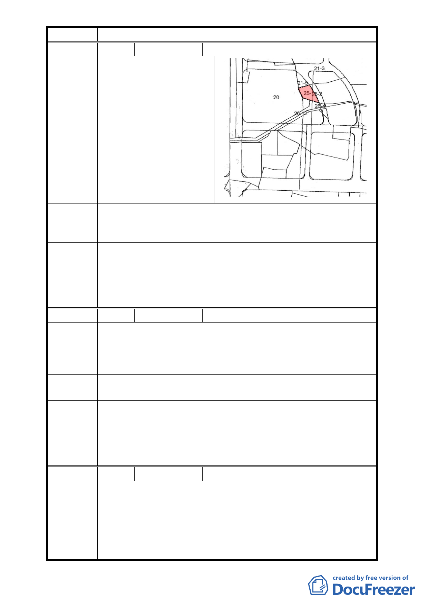

計畫案
編 號1
陳情人 方保泰
有關本次變更都市計
畫案範圍中，將部分建築
用地變更為公園用地及
道路用地，部分道路用地
陳情理由 卻 成 為 了 可 建 築 的 土
地，將本人之土地（臺北
市內湖區文德段四小段
25-1 地號）作道路使用，
本人堅決反對。
如將 19 地號旁六米計畫道路廢止，作為建築用地，建議不
建議辦法 如連同小公園也一同廢止改為建築用地，並將徵收土地退回原
地主。
本案修正劃定更新地區範圍，應包括東側原 4 公尺寬道路用地
委員會決
議
與公園用地，以與本案變更計畫範圍一致；另為兼顧申請者與
案內更新地區土地所有權人之權益，本案將配合更新事業核定
公告細部計畫，並依「臺北好好看」開發計畫案規定時程開工，
否則仍維持原計畫不予變更。
編 號2
陳情人 謝陳阿四、謝張清雲
本次變更都市計畫案範圍中，預計將市場旁的四米道路變
陳情理由
更為八米，但既然是市府大力推動的好好看計畫，站在鼓勵民
眾的立場，為何不往市府持有的市場用地退縮，而是再次犧牲
市民持有的土地？
建議辦法
在這樣資訊不明確、說明不詳盡的狀況下，應重新檢討暫
緩實施，俟另有方案後再公展說明。
本案修正劃定更新地區範圍，應包括東側原 4 公尺寬道路用地
委員會決
議
與公園用地，以與本案變更計畫範圍一致；另為兼顧申請者與
案內更新地區土地所有權人之權益，本案將配合更新事業核定
公告細部計畫，並依「臺北好好看」開發計畫案規定時程開工，
否則仍維持原計畫不予變更。
編 號3
陳情人 謝玉煌
本案在內湖區公所的對面，又屬於大內科的範圍，具有非
陳情理由 常重要的地理位置。但是因位在機場航高限制範圍，使得建築
物沒有辦法蓋得更高。
建議辦法 想請教有沒有機會讓本案能蓋得更高、更有其地標性。
委員會決 本案修正劃定更新地區範圍，應包括東側原 4 公尺寬道路用地
議 與公園用地，以與本案變更計畫範圍一致；另為兼顧申請者與
- 13 -